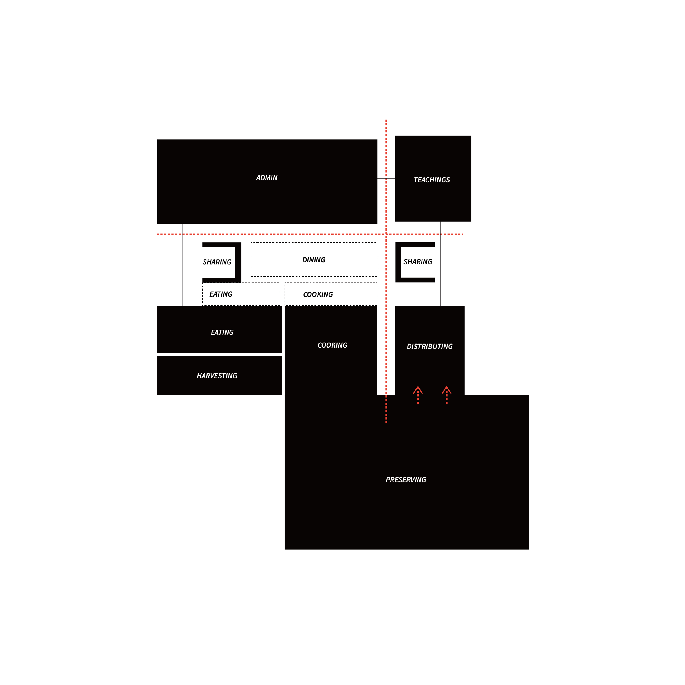
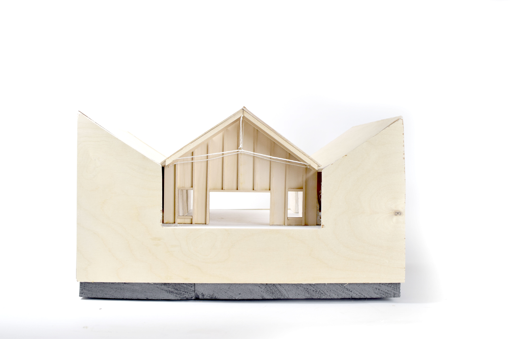
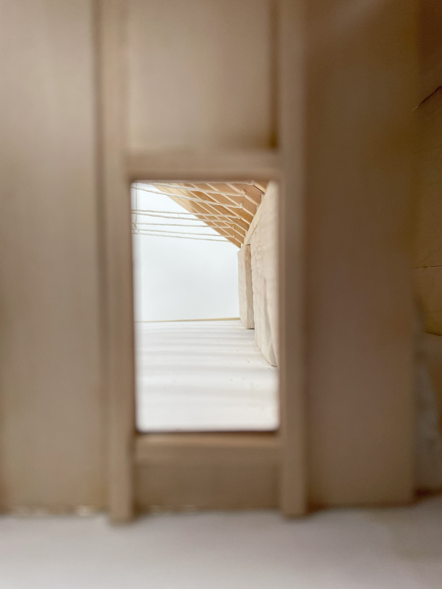
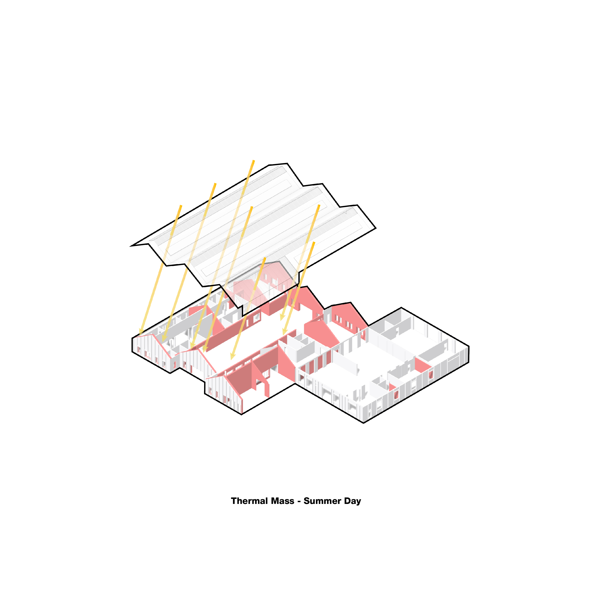
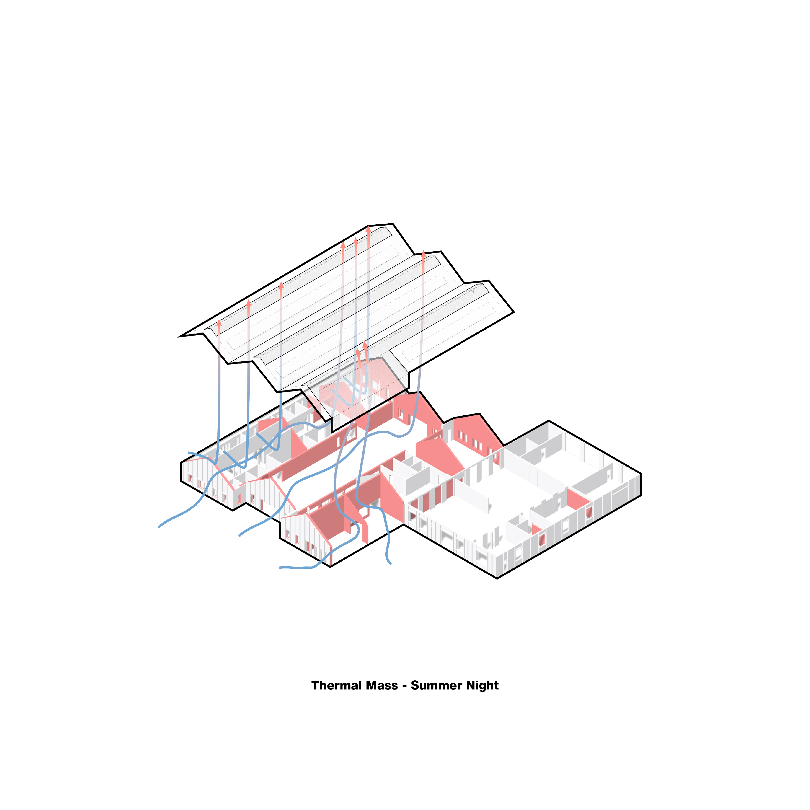
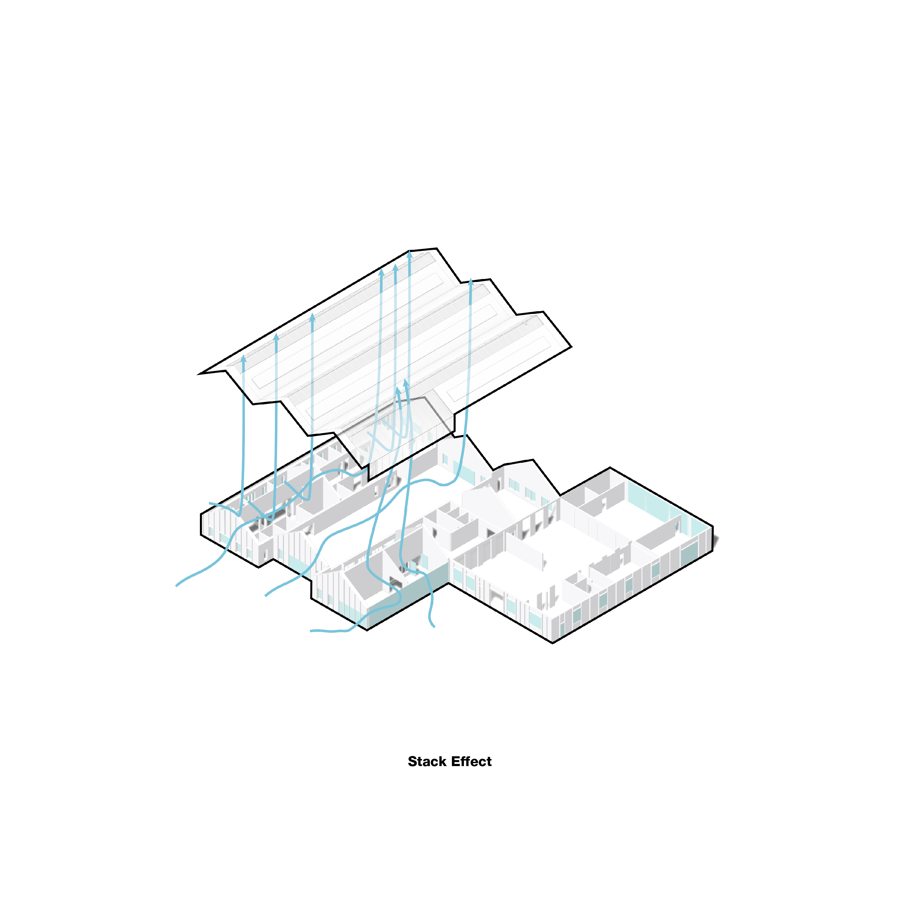

Food Cultures
title
Food Cultures
course
ARCH 493 Comprehensive Studio
supervisor
Jaliya Fonseka
category
spaces
+ Project Description
Food culture defines the practices, rituals, knowledge, and networks surrounding the production, distribution, and consumption of food. Indigenous chef Jared Qwustenuxun Williams maps the processes involved in preparing traditional foods that is lost in modern food production supply chains. We are increasingly disconnected from where our food comes from, and how it is prepared. This understanding is central to building reciprocal relationships with our land – knowing how it nourishes us, and how we can care for it. This building challenges the detached food supply chain by combining the processes of growing, harvesting, teaching, storing, and eating under a single roof. From the exterior, the three peaks evoke the merging of two single-family gable homes nestled within a spontaneous and cultivated landscape. While the building begins as a food bank, it evolves into a food hub and cultural center over its projected 100 year lifespan.












